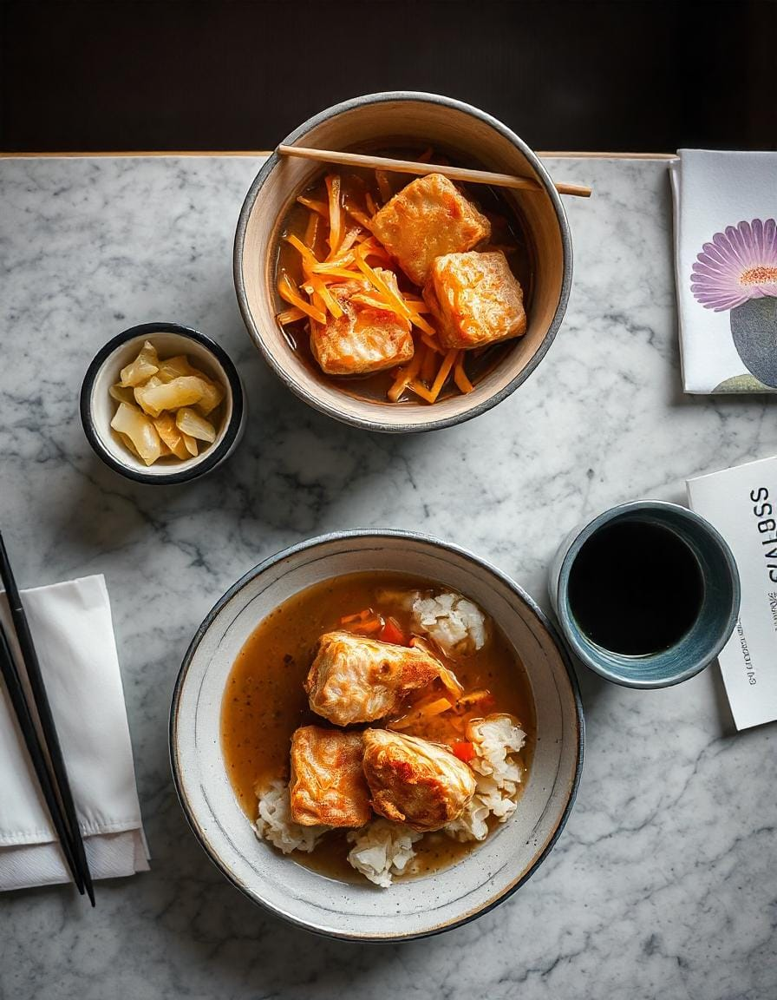

SAKURA DREAMS
Inicio
Menú
Nuestro Equipo
Nuestras Recetas
Reseñas
Sakura Dreams - Katsudon

Chuleta de cerdo empanizada y huevo sobre arroz.
Ingredientes:
2 chuletas de cerdo
sal y pimienta
Harina, huevo, panko (para empanizar)
1 cebolla (en rodajas)
2 huevos
½ taza de caldo dashi
2 cucharadas de salsa de soja
1 cucharada de azúcar
1 cucharada de mirín
arroz al vapor
Pasos:
Sazone las chuletas de cerdo, luego cúbralas con harina, huevo y panko. Freír hasta que estén dorados y bien cocidos./li>
Cortar las chuletas cocidas.
En una sartén, cocine a fuego lento la cebolla, el dashi, la salsa de soja, el azúcar y el mirin.
Agregue la carne de cerdo en rodajas y los huevos batidos y cocine hasta que los huevos estén cuajados.
Sirva sobre arroz al vapor.